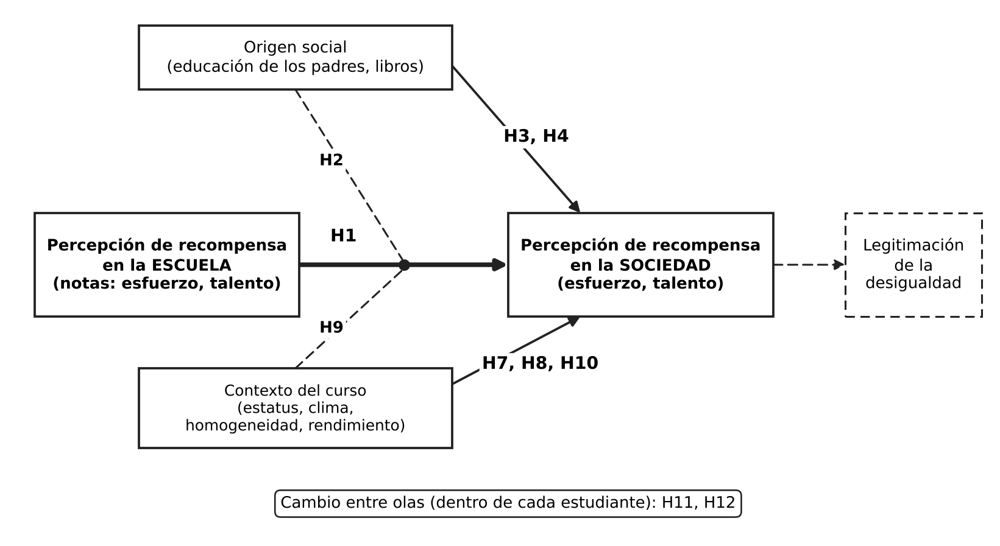

Percepciones de que el esfuerzo y el talento son recompensados
Socialización escolar y contexto en estudiantes de Chile (EDUMER)
Relevancia
Cómo la escuela enseña que el mérito explica el resultado
- Internalidad: éxitos y fracasos escolares se explican por el esfuerzo y la capacidad individuales (Wiederkehr et al. 2015; Darnon et al. 2018).
- Cuantificación del mérito: notas y diplomas hacen parecer que el estatus es merecido (Rohde 2023).
- Recontextualización ideológica: el origen social se transforma en diferencia individual (Bourdieu).
- Si el estudiante aprende en la escuela que el esfuerzo y el talento se recompensan, esa lectura puede transferirse a cómo interpreta la sociedad.
Por qué importa percibir que el esfuerzo se recompensa
- Es una forma de legitimar la desigualdad: presenta la distribución desigual como resultado del mérito individual (Castillo et al. 2019; Mijs 2018).
- Creer en la meritocracia reduce la percepción de injusticia de la desigualdad social (Batruch et al. 2023).
- Esa percepción se forma temprano, en la escuela (Castillo et al. 2024; Wiederkehr et al. 2015).
Antecedentes conceptuales y empíricos
Mérito y percepciones de recompensa
- Mérito = inteligencia + esfuerzo, no factores adscriptivos (Young, 1958).
- La percepción meritocrática es la evaluación de en qué medida el esfuerzo y el talento se recompensan en la práctica (Castillo et al. 2023).
- Se distingue de la percepción de privilegio: en qué medida el origen familiar y otros factores adscriptivos determinan los logros.
- Esta tesis estudia la percepción de que el esfuerzo y el talento son recompensados, por separado, en la escuela y en la sociedad.
Evidencia de transferencia desde la escuela
- Estudiantes chilenos de 8° básico (Castillo et al. 2024):
- En la escuela, 96,8% está de acuerdo con que el esfuerzo es importante para obtener buenas notas (78,6% en el caso del talento).
- En la sociedad, 62% cree que el esfuerzo se recompensa y 63,7% que el talento se recompensa.
- Francia, estudiantes de secundaria (N = 242) (Wiederkehr et al. 2015): explicar las notas por el esfuerzo se asocia con creer en una sociedad meritocrática y justa solo entre estudiantes de bajo nivel socioeconómico y entre mujeres.
- Más de 40 países (N = 88.421) (Batruch et al. 2023): creer que la escuela es meritocrática se asocia con menor percepción de injusticia de la desigualdad social.
Cuidado con la comparación en Castillo et al.: el ítem escolar mide importancia del esfuerzo para las notas y el societal mide si se recompensa; no son equivalentes, por eso se presentan por separado y no como una brecha. Fuente de los datos: Primer Estudio Nacional de Formación Ciudadana 2017 (Agencia de Calidad), 5.047 estudiantes de 231 escuelas. Wiederkehr: estudio 1, b = 0,34 en bajo nivel socioeconómico y b = 0,21 en mujeres. Batruch: cuatro estudios, dos de ellos con encuestas internacionales.
Transferecia
- Socialización escolar (Wiederkehr et al. 2015): notas y evaluación inculcan la norma de internalidad. Se espera que lo que se percibe en la escuela se transfiera a la sociedad.
- Legitimación del privilegio / capital cultural (Castillo et al. 2019): los favorecidos reinterpretan sus ventajas heredadas como logro. Se espera más percepción con más estatus y capital cultural. En adultos, el ingreso se asocia con más percepción de meritocracia.
- Efecto iluminador / función paliativa (Castillo et al. 2024; Wiederkehr et al. 2015): la educación da una mirada crítica, y los desfavorecidos dependen de la creencia escolar. Se espera menos percepción con más estatus, y una transferencia más fuerte en bajo nivel socioeconómico. En adultos, la educación (controlando el ingreso) se asocia con menos percepción.
H3 se formuló con expectativas rivales: legitimación (positiva) frente a efecto iluminador (negativa).
Modelo conceptual

Línea continua: efecto principal. Línea punteada que llega al punto sobre H1: interacción (moderación). Recuadro punteado: consecuencia teórica, no contrastada aquí.
El eje es la transferencia (H1). Origen social y contexto del curso actúan como efectos principales (H3, H4, H7, H8, H10) y como moderadores de la transferencia (H2, H9). H11 y H12 estudian el cambio dentro de cada estudiante entre olas.
Pregunta y objetivos
Pregunta de investigación
Pregunta
¿En qué medida la percepción de que el esfuerzo y el talento son recompensados en la escuela se transfiere a la percepción de que lo son en la sociedad, y cómo varía esa transferencia según el origen social?
Objetivo general
Analizar la transferencia de la percepción de recompensa al esfuerzo y al talento desde la escuela a la sociedad, y su variación según factores individuales y contextuales.
Objetivos específicos
- Transferencia: estimar la asociación entre la percepción de recompensa en las notas y en la sociedad (H1).
- Origen social: examinar si el estatus y el capital cultural se asocian con la percepción, y si moderan la transferencia (H2 a H4).
- Experiencia escolar: analizar el rol del rendimiento, la justicia percibida y la creencia en la meritocracia escolar (H5 y H6).
- Contexto del curso: evaluar los efectos contextuales y su moderación de la transferencia (H7 a H10).
- Cambio en el tiempo: describir cómo cambia la percepción dentro de cada estudiante entre olas (H11 y H12).
Hipótesis
Hipótesis contrastadas bivariadamente
Cada hipótesis se formula para esfuerzo (a) y talento (b) por separado.
- H1a-b: más percepción de recompensa en las notas, más percepción equivalente en la sociedad (transferencia).
- H3a-b: la educación de los padres se asocia con la percepción de recompensa. Expectativas rivales: positiva (legitimación del privilegio) o negativa (efecto iluminador).
- H4: más libros en el hogar (capital cultural), más percepción de recompensa al talento.
- H5a-b: mayor rendimiento y justicia percibida en las notas, más percepción.
- H6a-b: mayor creencia en la meritocracia escolar, más percepción.
Hipótesis para el análisis multinivel
- H7a-b: mayor estatus promedio del curso, más percepción, más allá del origen propio (efecto contextual).
- H8a-b: mayor clima meritocrático del curso, más percepción, más allá de la propia adhesión (efecto contextual).
- H10a-b: cursos socioeconómicamente más homogéneos, más percepción (efecto contextual, exploratoria).
- H11: la percepción de recompensa al esfuerzo disminuye dentro de cada estudiante entre olas (cambio intraindividual).
- H12a-b: mejorar el rendimiento o la justicia percibida respecto del propio promedio aumenta la percepción (efecto intraindividual).
Hipótesis multinivel: interacciones (moderación)
Solo dos hipótesis son de interacción: plantean que el efecto de H1 cambia según otra variable. Ambas son exploratorias.
- H2a-b: percepción en las notas × nivel socioeconómico del estudiante. La transferencia (H1) es más fuerte en estudiantes de menor nivel socioeconómico (función paliativa).
- H9a-b: percepción en las notas × rendimiento promedio del curso. La transferencia (H1) se atenúa en cursos de mayor rendimiento promedio (efecto iluminador).
Interacción entre variables del mismo nivel (H2) y entre niveles (H9). Se contrastan con el término producto en los modelos mixtos.
Metodología
Datos y muestra
- Panel EDUMER: estudiantes de 6° básico a 2° medio.
- 12 establecimientos y alrededor de 35 cursos; el curso se identifica combinando establecimiento (
d2) y curso (d3_def). - Análisis bivariado actual con la Ola 2 (n ≈ 670 con dato en las variables dependientes).
- Con 12 establecimientos no se estiman efectos contextuales de escuela; el contexto se define a nivel de curso, y la dependencia del establecimiento entra como control.
- Códigos 88 y 99 se tratan como datos perdidos.
Variables
Dependientes (escala 1 a 4)
- Esfuerzo recompensado en Chile (
p1_1) - Inteligencia y habilidad recompensadas en Chile (
p1_2)
Se analizan por separado, sin índice.
Experiencia escolar
- Recompensa en las notas (
p2_1,p2_2) - Creencia en la meritocracia escolar (
p2_3) - Promedio de notas (
p4) - Justicia percibida: J = ln(nota / nota merecida)
Origen social
- Estatus: promedio de la educación de madre y padre
- Capital cultural: libros en el hogar (
p30)
Contexto (curso)
- Composición socioeconómica (media)
- Heterogeneidad socioeconómica (desviación estándar)
- Clima meritocrático (media de BSM) y rendimiento promedio
Controles: dependencia del establecimiento, entre otros.
Estrategia de análisis
1. Bivariado (Ola 2)
- Asociación ordinal: rho de Spearman 95%
2. Modelos mixtos (próxima etapa)
- Efectos contextuales (H7 a H10): modelos mixtos con estudiantes anidados en cursos (intercepto aleatorio por curso). El estatus individual se centra en la media del curso para separar el efecto del contexto del origen propio.
- Interacciones (H2 y H9): término producto entre la percepción en las notas y el nivel socioeconómico individual (H2) o el rendimiento promedio del curso (H9, interacción entre niveles).
- Cambio en el tiempo (H11 y H12): modelos mixtos de medidas repetidas (olas anidadas en estudiantes), que separan la variación dentro de cada persona de la diferencia entre personas.
Los IC y p del bivariado ignoran la anidación; por eso son descriptivos. Se evaluará además un modelo mixto ordinal como análisis de robustez dado que la variable dependiente tiene 4 categorías.
Análisis bivariado
Percepción de recompensa en la sociedad (Ola 2)
Magnitud de las asociaciones

Los IC excluyen el cero en H1, H4, H6 y H5 (J). H3 se centra en cero. H5 (nota): solo talento excluye el cero.
Transferencia de las notas a la sociedad (H1)


La línea sube: quienes ven más recompensa en las notas también ven más recompensa en la sociedad (de cerca de 30-37% en “Muy en desacuerdo” a cerca de 65-72% en “De acuerdo”). El salto está entre los extremos bajos y las categorías de acuerdo; entre “De acuerdo” y “Muy de acuerdo” casi no cambia. Los grupos de desacuerdo son pequeños y sus barras largas.
Origen social (H3 y H4)


Con la educación de los padres las líneas son casi planas: el estatus no distingue la percepción de recompensa. Con los libros en el hogar, el % tiende a bajar en los grupos con más libros, lo contrario de lo esperado en H4, aunque con barras largas en las categorías pequeñas.
Rendimiento y justicia percibida (H5)


Las notas se asocian algo más con la percepción de recompensa al talento que con la del esfuerzo, con una pendiente leve. Quienes se ven sub-recompensados muestran menos acuerdo que quienes consideran justa su nota; los sobre-recompensados no se distinguen de estos últimos (barras muy largas).
Contexto del curso (H7 y H10)


Nube de puntos sin una pendiente clara y sin asociaciones significativas: ni la composición ni la heterogeneidad socioeconómica del curso se asocian con su percepción promedio. Con pocos cursos y algunos muy pequeños, esto no descarta un efecto.
Referencias
Batruch, Anatolia, Jolanda Jetten, Herman Van De Werfhorst, Céline Darnon, y Fabrizio Butera. 2023. «Belief in School Meritocracy and the Legitimization of Social and Income Inequality». Social Psychological and Personality Science 14 (5): 621-35. https://doi.org/10.1177/19485506221111017.
Canales Cerón, Manuel, Víctor Sebastián Orellana Calderón, Fabián Guajardo Mañán, Manuel Canales Cerón, Víctor Sebastián Orellana Calderón, y Fabián Guajardo Mañán. 2022. «Sujeto y cotidiano en la era neoliberal: el caso de la educación chilena». Revista mexicana de ciencias políticas y sociales 67 (244): 285-307. https://doi.org/10.22201/fcpys.2448492xe.2022.244.70386.
Castillo, Juan Carlos, Julio Iturra, Luis Maldonado, Jorge Atria, y Francisco Meneses. 2023. «A Multidimensional Approach for Measuring Meritocratic Beliefs: Advantages, Limitations and Alternatives to the ISSP Social Inequality Survey». International Journal of Sociology 53 (6): 448-72. https://doi.org/10.1080/00207659.2023.2274712.
Castillo, Juan C., Alex Torres, Jorge Atria, y Luis Maldonado. 2019. «Meritocracia y Desigualdad Económica: Percepciones, Preferencias e Implicancias». Revista Internacional de Sociología 77 (1): e117. https://doi.org/10.3989/ris.2019.77.1.17.114.
Contreras, Dante, Paulina Sepúlveda, y Sebastián Bustos. 2010. «When Schools Are the Ones That Choose: The Effects of Screening in Chile*». Social Science Quarterly 91 (5): 1349-68. https://doi.org/10.1111/j.1540-6237.2010.00735.x.
Darnon, Céline, Virginie Wiederkehr, Benoît Dompnier, y Delphine Martinot. 2018. «“Where There Is a Will, There Is a Way”: Belief in School Meritocracy and the Social-Class Achievement Gap». British Journal of Social Psychology 57 (1): 250-62. https://doi.org/10.1111/bjso.12214.
Mijs, Jonathan J B. 2018. The Unfulfillable Promise of Meritocracy: Three Lessons and Their Implications for Justice in Education. 6w9rg_v1. SocArXiv. https://doi.org/10.1007/s11211-014-0228-0.
Palet, Andrea, Pilar de Aguirre, y PNUD Chile, eds. 2017. Desiguales: orígenes, cambios y desafíos de la brecha social en Chile. PNUD : Uqbar Editores.
Rohde, Noëlle. 2023. «“To Assign People Their Place in Society”: School Grades and the Quantification of Merit». Economy and Society 52 (3): 506-30. https://doi.org/10.1080/03085147.2023.2225346.
Verger, Antoni, Xavier Bonal, y Adrián Zancajo. 2016. «Recontextualización de Políticas y (Cuasi)Mercados Educativos. Un Análisis de Las Dinámicas de Demanda y Oferta Escolar En Chile». Education Policy Analysis Archives 24 (febrero): 27. https://doi.org/10.14507/epaa.24.2098.
Wiederkehr, Virginie, Virginie Bonnot, Silvia Krauth-Gruber, y Céline Darnon. 2015. «Belief in School Meritocracy as a System-Justifying Tool for Low Status Students». Frontiers in Psychology 6 (julio). https://doi.org/10.3389/fpsyg.2015.01053.